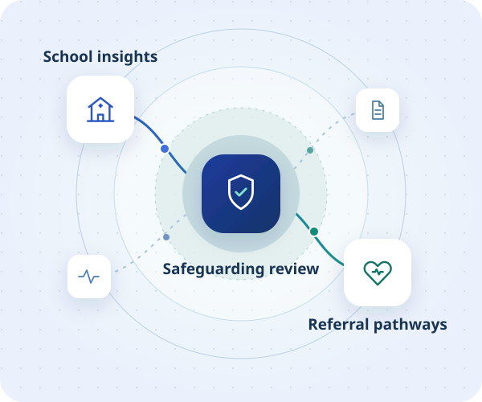

Fragmented Signals
Attendance, behaviour, pastoral and welfare records often sit in separate systems. Looking at them in isolation can make changes harder to recognise.
Children’s wellbeing · Early intervention
Connecting school insights with earlier mental health support.
YouthIntel is an early-stage HealthTech and EdTech venture exploring how existing school wellbeing information can be connected to help safeguarding professionals recognise emerging concerns and prepare better-informed mental health referrals.

Early-stage concept and prototype. Not currently available for clinical or school deployment.
About YouthIntel
A change in attendance, a pastoral concern and a visit to the school medical room may tell part of the same story. When each is recorded in a separate system, safeguarding staff can find it difficult to see how those changes fit together.
YouthIntel grew out of this challenge. Its proposed platform would bring relevant indicators into view, help professionals make sense of emerging patterns and organise the evidence needed for local referrals. Qualified professionals would remain responsible for deciding what action to take.
Important signs can exist across different systems long before they become visible as a wider pattern.
Attendance, behaviour, pastoral and welfare records often sit in separate systems. Looking at them in isolation can make changes harder to recognise.
A child can be struggling with few visible signs in school records. Concerns from home and other settings may also lack a clear route to the safeguarding team.
Preparing a referral to Child and Adolescent Mental Health Services (CAMHS) can mean gathering evidence from several sources to meet local requirements.
Schools may have limited visibility of referral progress while continuing to coordinate support for a child and their family.
YouthIntel’s proposed approach addresses how wellbeing information is brought together in schools and how it can inform the next steps in a referral.
Enable early mental health intervention by connecting school insights directly to NHS care, so no child falls through the gap.
Relevant wellbeing information can help professionals understand concerns earlier and take timely, informed action. YouthIntel was conceived to explore how technology could make that connection clearer.
A future where emerging signs of mental health difficulties are recognised earlier, safeguarding professionals are better informed, and children are connected with appropriate support. That means reducing information gaps between education and healthcare.
What if the information needed to recognise an emerging concern already exists, but remains disconnected? The founders brought NHS operational experience and machine-learning engineering together with education-sector research to explore practical, explainable tools for earlier intervention and professional review.
Our Approach
Turning disconnected indicators into clearer information for the professionals who support children.
Bring together attendance, behaviour, pastoral and safeguarding concerns, and medical-room visits. The platform would work alongside existing school systems.
Compare changes across several areas with a student’s own past patterns. The initial design uses consistent rules that professionals can understand.
Show the Designated Safeguarding Lead why a pattern was highlighted, so they can review the evidence and decide what action, if any, is appropriate.
Help staff organise evidence for local CAMHS referrals. A future secure NHS connection would depend on technical, governance and clinical safety requirements.
YouthIntel is designed to support professional judgement, which guides every safeguarding decision.
The prototypes explored parts of the core concept, including a subset of the scoring logic. The original plan also outlined how the approach could develop over time.
YouthIntel is a proposed decision-support system. Clinical diagnosis and safeguarding decisions remain the responsibility of qualified professionals.
Children’s wellbeing is at the heart of the idea.
Recognising emerging concerns can help professionals act sooner.
Technology should explain what it highlights in language people can understand.
Sensitive information deserves careful handling.
Schools, healthcare professionals and families all have roles in supporting children.
Technology should make practical work easier for the people doing it.
Co-Founder & CEO
Srushti leads YouthIntel’s strategy, research and stakeholder engagement. She brings experience in NHS operations and holds an MSc in Health and Social Care Management from Oxford Brookes University.
Co-Founder & CTO
Nagesh leads YouthIntel’s technical development. He brings experience in software engineering and machine learning and holds an MSc in Advanced Computer Science with Distinction from Oxford Brookes University.
Interested in the ideas behind YouthIntel, student wellbeing technology or responsible digital innovation? We welcome thoughtful conversations and opportunities to exchange ideas.
Oxford, United Kingdom